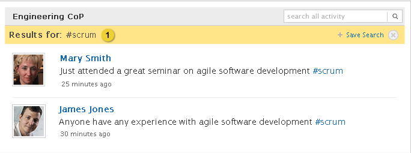
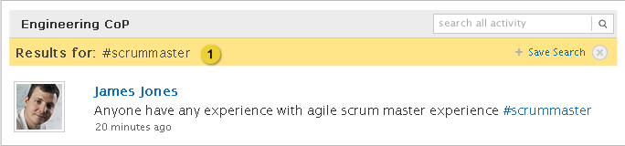
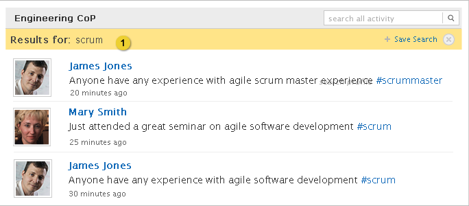

Home > Product Specification > Features > Search a stream
Search a stream
Manage lists, groups, and saved searches
View a stream of activity
Overview
Knowledge workers can view an activity stream including browsing and searching for employees, groups, and organizations activities.
Conditions of satisfaction
- The knowledge worker must be able to perform a keyword search on a stream matching activity based on message text or url titles.
- The knowledge worker must be able to perform a keyword search on a stream matching activity based on hashtags.
- The system must use AND logic when performing a keyword search on a stream.
- The knowledge worker must be able to clear a keyword search on a stream.
- The knowledge worker must be able to save a keyword search performed on a stream.
User experience

- Keyword search can be performed on hashtags. Searching on hashtags returns an exact match on the keywords. In this example, only posts with #scrum (in upper or lower case) are returned in the results.

- Searching on hashtags returns an exact match on the keywords. In this example, only posts with #scrummaster (in upper or lower case) are returned in the results.

- Searching on a regular (non-hashtag) term returns all results that match the word or stem from the word. In this example, all activities with scrum in the post or hashtag are returned.
Saving a keyword search

- A knowledge worker can perform a keyword search on a stream by entering one or more keywords into the search box.

- Keywords entered by knowledge worker separated by spaces. Create App icon is removed when a search is active in the stream.
- Link to save the search, clicking this link launches the save search modal (see below).
- Clicking the close icon closes the search results and returns the user back to the stream.

- The knowledge worker can name the search, the search keywords are populated in this field by default.
- The knowledge worker can edit the search criteria they originally entered.
- The knowledge worker can save a search from a profile activity stream and the activity page. The following are the expected results depending on where the search is saved.
- When a search is successfully saved from a profile activity stream, the knowledge worker is returned to the profile page, feedback displays at the top of the page with a close option: “Your search has been successfully saved”, and the + Save Search link is still displayed in the stream. If one or both of the required fields are left blank the following message appears above the form: “Please enter a name and at least one keyword”. Refer to the Action Feedback UI design pattern for additional details.
- When a search is successfully saved from the Activity page, the knowledge worker is returned to the new search stream and displays at the top of the page with a close option: “Your search has been successfully saved.” If one or both of the required fields are left blank the following message appears above the form: “Please enter a name and at least one keyword”. Refer to the Action Feedback UI design pattern for additional details.
Test Plans
Knowledge Worker
- Action: Perform a keyword search on an activity stream based on message text or url titles
- Verify the ability to search any activity stream
- Organization, Everyone, Following, Lists, Profiles, Groups, and Sub Organizations
- Verify the system returns search results matching the keywords found within messages or URL titles
- Verify the system returns search results for feeds and posts as appropriate
- Verify the system displays a method to view more results if there are more than 10 results
- Verify the system uses AND logic when performing a keyword search on a stream
- Action: Perform a keyword search on an activity stream based on hashtags
- Verify the ability to search any activity stream
- Organization, Everyone, Following, Lists, Profiles, Groups, and Sub Organizations
- Verify the system returns search results matching the hashtags found within messages or URL titles
- Verify the system returns search results for feeds and posts as appropriate
- Verify the system displays a method to view more results if there are more than 10 results
- Verify the system uses AND logic when performing a keyword search on a stream
Action: Clear a keyword search
- Verify the search is cleared when user closes the search box
- Action: Save a keyword search
- Verify a keyword search can be saved
- Verify it appears under saved searches on the activity page
Group Coordinator
- Action: Execute same tests as Knowledge Worker
- Verify tests executed successfully
Organization Coordinator
- Action: Execute same tests as Knowledge Worker
- Verify tests executed successfully
Root Organization Coordinator
- Action: Execute same tests as Knowledge Worker
- Verify tests executed successfully
| PAGE CONTENTS
Version 0.9
Documentation is also available for all of the following versions:
1.0 | 1.1 | 1.5 | 2.0
|